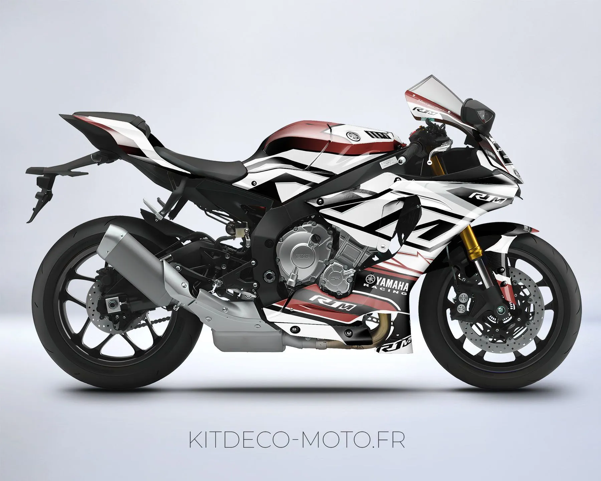
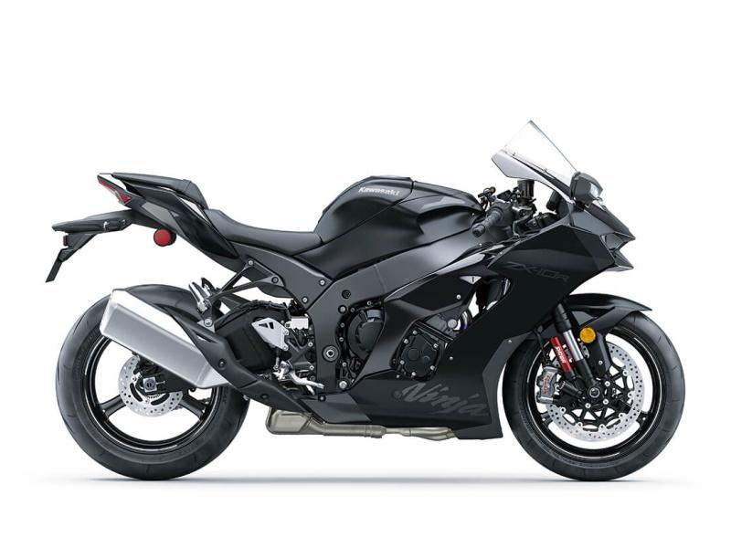
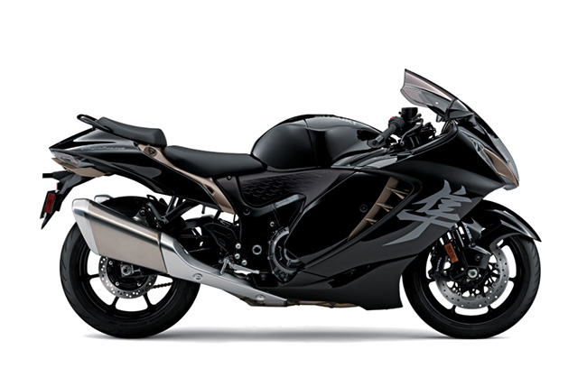

Yamaha R1
Yamaha R1 არის იაპონური მწარმოებლის ფლაგმანური სპორტული ბაიკი, რომელიც 1998 წლიდან მოყოლებული ერთ-ერთი ყველაზე ინოვაციური მოდელია ლიტრ (1000cc) კლასში. თანამედროვე ვერსია აღჭურვილია 998 კუბ.სმ მოცულობის ოთხცილინდრიანი Crossplane Crankshaft ძრავით, რომელიც გამოირჩევა არათანაბარი ცეცხლმიმცემი რიგითობით, რის გამოც ბრუნვის გადაცემა ხდება უფრო გლუვად და კონტროლირებადად. მისი ძრავა გამოიმუშავებს 200 ცხენის ძალას 13,500 ბრუნზე და 113 ნიუტონ-მეტრ ბრუნვის მომენტს, რაც ბაიკს აჩქარებისას გამორჩეულ ძალას ანიჭებს. ჩარჩო არის ალუმინის Deltabox, რომელიც უზრუნველყოფს მსუბუქობასა და სიმყარეს. მშრალი წონა შეადგენს დაახლოებით 199 კილოგრამს. ტექნოლოგიურად, R1 აღჭურვილია 6-ღერძიანი IMU სენსორით, რომელიც აკონტროლებს ბაიკის დახრას, სრიალსა და აჩქარებას. ასევე აქვს Slide Control, Traction Control, Launch Control, Quick Shifter და Engine Brake Management სისტემები. სავალი ნაწილი მოიცავს სრულად რეგულირებად KYB საკიდრებს, ხოლო დამუხრუჭება უზრუნველყოფილია Brembo-ს ორმაგი დისკებით. R1 აერთიანებს MotoGP ტექნოლოგიას, დაბალ წონასა და ზუსტ რეაქციას - ის შექმნილია მათთვის, ვინც მაქსიმალურ კონტროლს და სიჩქარეს ეძებს.
To the top
Honda CBR1000RR

Honda CBR1000RR Fireblade წარმოადგენს ჰონდას უმაღლესი კლასის სპორტულ ბაიკს, რომელიც შექმნილია სისწრაფისა და სიზუსტის იდეალური ბალანსისთვის. მისი 999 კუბ.სმ მოცულობის ოთხცილინდრიანი ძრავა გამოიმუშავებს დაახლოებით 189 ცხენის ძალას და 114 ნმ ბრუნვის მომენტს, რაც უზრუნველყოფს სწრაფ აჩქარებასა და სტაბილურ კონტროლს. CBR1000RR იყენებს მსუბუქ Diamond Frame ჩარჩოს, რომელიც აძლიერებს სტაბილურობას მაღალი სიჩქარით მოძრაობისას. ბაიკის მშრალი წონა მხოლოდ 196 კგ-ია, რაც მას რეაგირებადსა და მოქნილს ხდის. Fireblade აღჭურვილია მოწინავე ელექტრონული სისტემებით, მათ შორის Selectable Torque Control (HSTC), Wheelie Control, Engine Braking Control, Quickshifter, და 5-დონიანი ABS-ით. მისი Showa Balance Free Forks საკიდრები იძლევა რბილ, მაგრამ ზუსტ მართვას, ხოლო Tokico-ს მუხრუჭები უზრუნველყოფენ გამორჩეულ დამუხრუჭების ძალას. Honda-ს მიზანი Fireblade-ის შექმნისას იყო “Total Control” — იდეალური ბალანსი ძალასა და მართვადობას შორის. შედეგად მიიღეს მოტოციკლი, რომელიც შესაფერისია როგორც ტრეკზე რბოლისთვის, ისე ყოველდღიური სვლისთვის, იმავე სიზუსტით, რაც ჰონდას რბოლურ მოდელებს ახასიათებს.
To the top
Kawasaki Ninja ZX-10R
Kawasaki Ninja ZX-10R ერთ-ერთი ყველაზე ძლიერი და სპორტული მოტოციკლია, შექმნილი უშუალოდ MotoGP-ის გამოცდილებაზე დაყრდნობით. მას აქვს 998 კუბ.სმ მოცულობის ოთხცილინდრიანი ძრავა, რომელიც გამოიმუშავებს დაახლოებით 203 ცხენის ძალას და 115 ნმ ბრუნვის მომენტს, რაც აძლევს შესანიშნავ აჩქარებას და გამძლეობას. მოწყობილობა აღჭურვილია მოწინავე IMU (Inertial Measurement Unit) სისტემით, რომელიც აკონტროლებს ბაიკის პოზიციას ექვს ღერძზე, რაც უზრუნველყოფს სრულ ელექტრონულ დახმარებას - Traction Control, Launch Control, Engine Brake Control და Cornering ABS. სავალი ნაწილი მოიცავს Showa Balance Free Fork-ს და BFRC Lite უკანა ამორტიზატორს, რომლებიც შექმნილია რბოლისთვის. დამუხრუჭებას უზრუნველყოფს Brembo M50 კალიპერები და 330 მმ დისკები წინა მხარეს. ZX-10R-ის აეროდინამიკური ფორმა და წინა ფრთები ზრდის დაჭერის ძალას მაღალი სიჩქარისას, რაც აძლიერებს სტაბილურობას. მშრალი წონა შეადგენს დაახლოებით 207 კგ-ს. ეს ბაიკი არის შთამბეჭდავი კომბინაცია სიძლიერისა და კონტროლისა — სწორედ ამიტომ, ZX-10R მრავალი წლის განმავლობაში გამოიყენება World Superbike Championship-ში გამარჯვებული გუნდების მიერ.
To the top
Suzuki Hayabusa
Suzuki Hayabusa ერთ-ერთი ყველაზე ლეგენდარული მოტოციკლია ისტორიაში. პირველად 1999 წელს გამოჩნდა და მაშინვე გახდა მსოფლიოს ყველაზე სწრაფი სერიული მოტოციკლი. თანამედროვე ვერსია იყენებს 1340 კუბ.სმ მოცულობის ოთხცილინდრიან ძრავს, რომელიც გამოიმუშავებს 190 ცხენის ძალას და 150 ნმ ბრუნვის მომენტს. Hayabusa-ს მთავარი უპირატესობა არის მისი სიჩქარე და გამორჩეული სტაბილურობა. მაქსიმალური სიჩქარე აღწევს 299 კმ/სთ-ს, თუმცა ელექტრონულად შეზღუდულია. ბაიკი იყენებს მოწინავე Suzuki Intelligent Ride System (SIRS)-ს, რომელიც მოიცავს Traction Control, Power Mode Selector, Launch Control, და Cruise Control ფუნქციებს. მისი აეროდინამიკური დიზაინი შექმნილია ქარის წინააღმდეგობის მინიმუმამდე დასაყვანად. სავალი ნაწილი მოიცავს KYB-ის სრულად რეგულირებად საკიდრებს, ხოლო დამუხრუჭებას უზრუნველყოფს Brembo Stylema კალიპერები და 320 მმ დისკები. Hayabusa-ს წონა შეადგენს დაახლოებით 264 კგ-ს, მაგრამ მისი დაბალწონიანი ჩარჩო და ძლიერი ბრუნვა უზრუნველყოფს საოცარ აჩქარებას. ეს მოდელი განკუთვნილია არა მხოლოდ სიჩქარის მოყვარულთათვის, არამედ მათთვისაც, ვისაც სურს ძალა და კომფორტი ერთ ბაიკში.
To the top
Ducati Panigale V4

Ducati Panigale V4 წარმოადგენს იტალიური ინჟინერიის ერთ-ერთ ყველაზე სრულყოფილ ნიმუშს. მას აქვს 1103 კუბ.სმ Desmosedici Stradale V4 ძრავა, რომელიც შექმნილია MotoGP-ის გამოცდილებაზე დაყრდნობით. ძრავა გამოიმუშავებს 214 ცხენის ძალას და 124 ნმ ბრუნვის მომენტს, რაც ერთ-ერთ ყველაზე ძლიერ სერიულ ბაიკად აქცევს მას. ძრავი განლაგებულია 90°-იანი კუთხით, რაც აუმჯობესებს ბალანსს და ბრუნვის გადაცემას. Ducati Quick Shift, Traction Control EVO 3, Slide Control, Wheelie Control, Engine Brake Control და Cornering ABS სისტემები უზრუნველყოფენ სრულ ელექტრონულ მართვას. სავალი ნაწილი აღჭურვილია Öhlins-ის სრულად ელექტრონული საკიდრებით, რომლებიც ავტომატურად ერგებიან გზის პირობებს. დამუხრუჭებას უზრუნველყოფს Brembo Stylema სისტემა 330 მმ დისკებით. მისი მშრალი წონა მხოლოდ 175 კგ-ია, რაც აძლევს გამორჩეულ ძალა-წონის შეფარდებას. Panigale V4 ცნობილია თავისი სიზუსტით, სტაბილურობით და დაუჯერებელი აჩქარებით. ეს Ducati არ არის მხოლოდ ბაიკი — ეს არის სარბოლო ტექნოლოგიისა და დიზაინის ერთიანობა, შექმნილი სუფთა ადრენალინისა და პერფორმანსის მოყვარულთათვის.
To the top